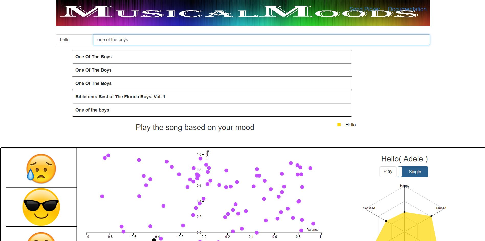
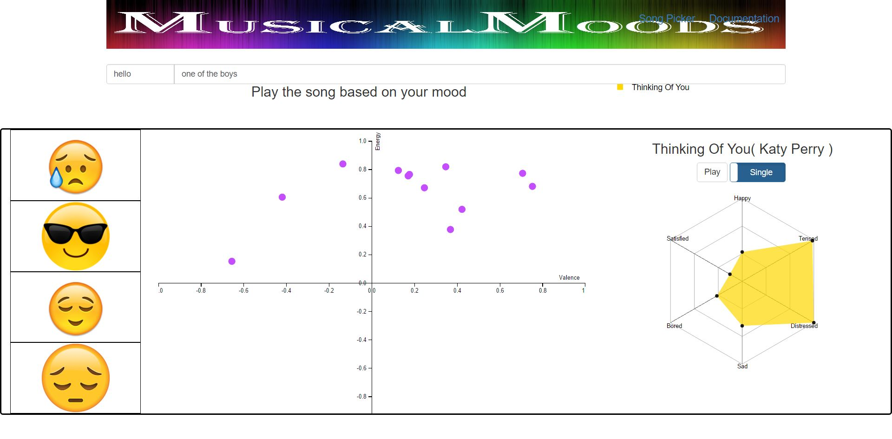
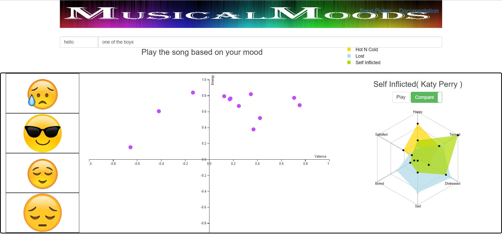
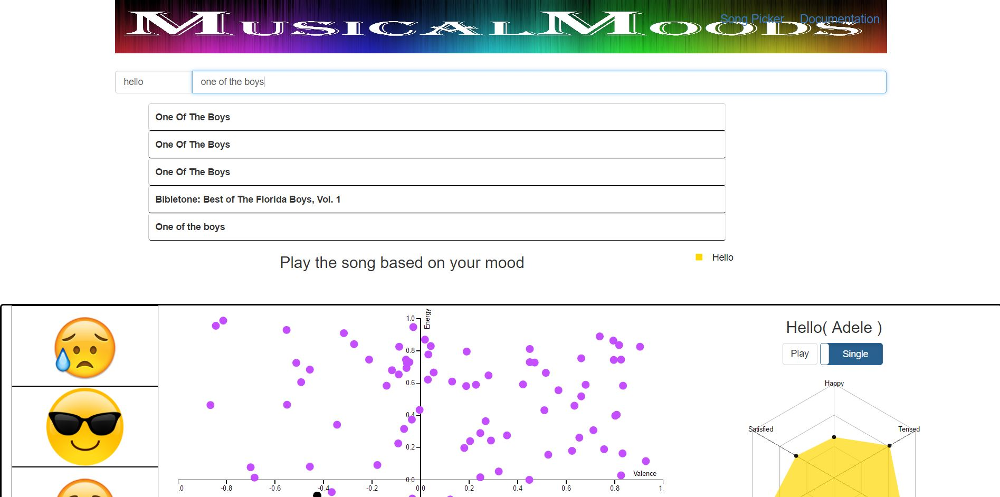
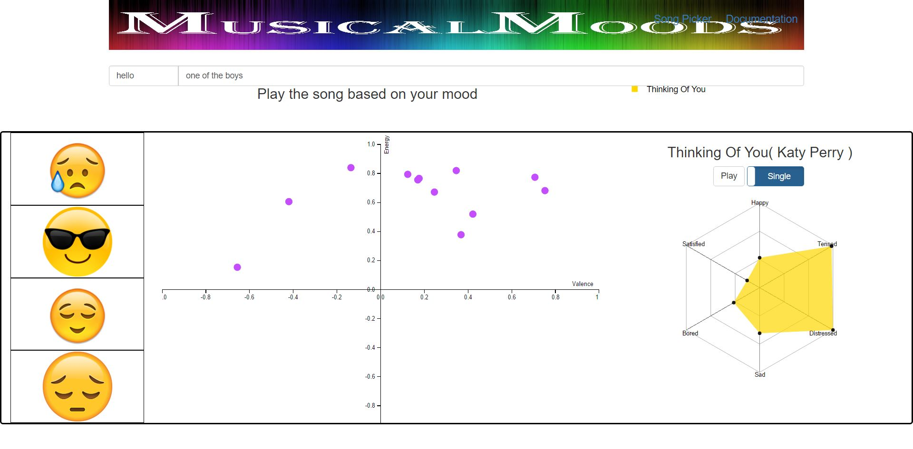
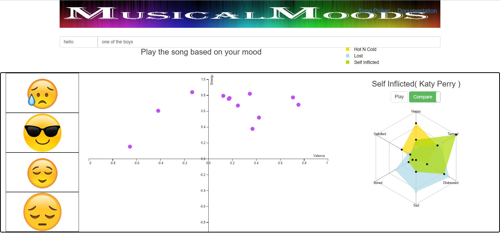
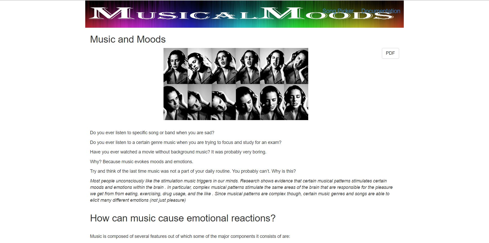
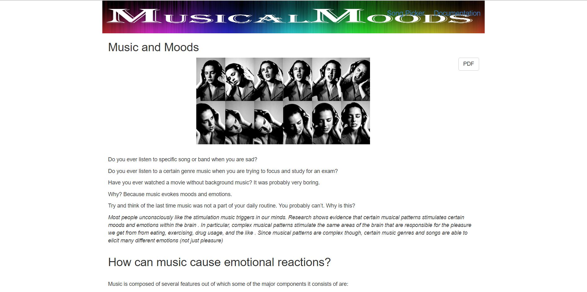

Problem Statement:
Music always influences our mood. However, we do not know how it influences the mood. We plan to visually represent this information.
Solution:
We designed and developed a website Musical Moods as our solution. The website displayed the songs categorized by the mood they influence and provides the user a way to play the song as well, depicting the sound waves in different ways.
My Role:
This project was a team effort. My role was:
- Researching the appropriate solution for our problem
- Creating the low fidelity(Sketches) of our idea.
Steps:
- Understanding the problem
- Discovery
- Dataset
- Low-fidelity sketches
- Prototype
Tools used:
- Pencil and Paper
- Balsamiq
- PHPStorm
- Xampp
- HTML, CSS, JS
- D3
- Github.com


 







 
